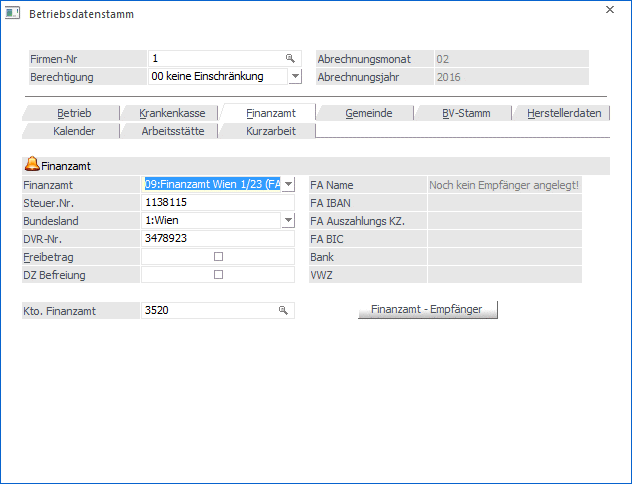

In diesem Register werden die Daten für das Finanzamt erfasst.

Ø Finanzamt
Aus der Auswahllistbox kann das für den Betrieb zuständige Finanzamt gewählt werden.
Ø Steuer-Nr.
Eingabe der Steuernummer, die vom Finanzamt zugewiesen wird.
Die Kombination aus Finanzamtsnummer und Steuernummer wird auf ihre Richtigkeit geprüft.
Ø Bundesland:
Aus der Auswahllistbox kann das Bundesland gewählt werden, in dem der Betrieb (die Filiale, die Firma) beheimatet ist. Dies kann auch Abweichend vom Standort des Finanzamtes sein. Abhängig von dieser Einstellung wird auch der DZ-Beitrag berechnet.
Ø DVR-Nr.
Datenverarbeitungsregisternummer des Betriebes.
Ø Freibetrag
ü aktiv
Es wird abgeprüft, ob für
diesen Betrieb die KommSt- und DB-Bemessungsgrundlage den Betrag von € 1.460,--
übersteigt. Sollte dies nicht der Fall sein, so wird von der Bemessungsgrundlage
der Freibetrag von € 1.095,-- abgezogen, der Rest wird mit derzeit 3 bzw. 4,5 %
berechnet. Dieser in Anspruch genommene Freibetrag wird auch auf der KommSt -
Jahresliste ausgewiesen.
ü inaktiv
Es wird kein Freibetrag
in Anspruch genommen.
Ø DZ Befreiung
Wenn diese Option gesetzt ist, wird in der Abrechnung die Bemessungsgrundlage des DZ nicht gefüllt und somit keine DZ berechnet.
Ø Kto. Finanzamt
Hier kann die Kontonummer eingetragen werden, auf die die Verbindlichkeiten an das Finanzamt gebucht werden sollen. Durch Drücken der F9-Taste kann nach allen Kreditoren, die in der WinLine FIBU angelegt sind, gesucht werden. Wird hier eine Kontonummer eingetragen, wird für dieses FA auch eine KF-Buchung mit Offenen-Posten-Informationen erzeugt (derzeit noch nicht unterstützt).
Ø Finanzamt - Empfänger
Durch Anklicken des Buttons Finanzamt - Empfänger können die Stammdaten bezüglich Adresse und Bankverbindung des Finanzamts hinterlegt werden. Diese Information wird benötigt, wenn die Zahlungen an das Finanzamt im Zuge der Monatsauswertungen aus dem System erstellt werden sollen (Clearingübergabe). Bei den Empfängerdaten sollten zumindest die Informationen Name und Adresse sowie die Bankverbindung (Register Detail) angegeben werden.
Wurde noch kein entsprechender Datensatz angelegt, wird bei Name "Noch kein Empfänger angelegt" angezeigt. Ansonsten wird über dem Button die entsprechende Information des Empfängers angezeigt.